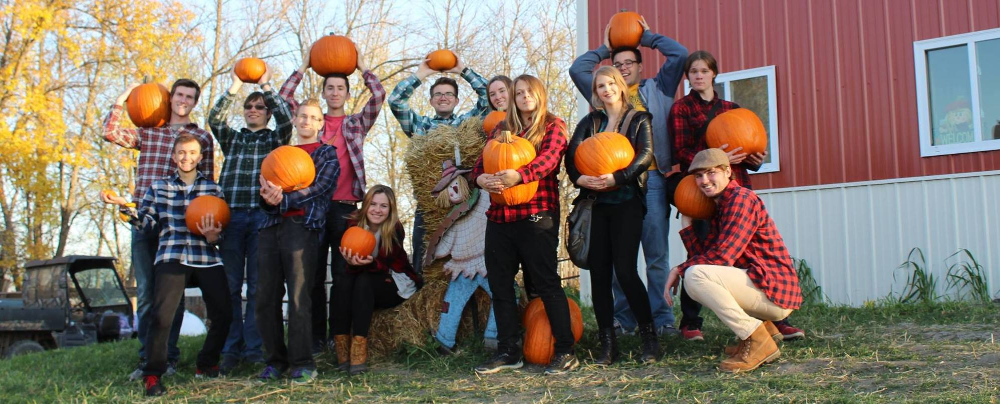

Kyle's Resume
Kyle D. Hagler
Email: khagler.kh@gmail.com | Cell: (701)471-4303 | Fargo, ND 58102
Searching for new opportunities in the Fargo, ND area. "Anyone who has never made a mistake has
never tried anything new." - Albert Einstein
EDUCATION
Emerging Digital Academy, Fargo ND - Full Stack Engineering DevelopmentApril 2020 - August 2020
Github: https://github.com/KyleHagler-bit
August 2014 - May 2018
Cumulative GPA: 3.6
SKILLS Hover over for details
-
HTML/CSS/JavascriptFirst contact was in highschool, core concepts strengthed during time with Emerging Digital Academy
-
CREO SoftwareTaught through NDSU, major project included disassembling an entire lawn mower and remodeling on computer
-
MATLABTaught through NDSU, mainly used for graphing data
-
Arduino SoftwareSelf-taught as part of NDSU Senior Design project, allow user to start/stop and view remaining time for popcorn machine
-
Microsoft OfficeUsed throughout high school and college
-
Google Docs/Sheets/DriveUsed throughout high school and college
-
Shop/Lab SafetyLab safety course was taken at NDSU and taught student volunteers tool safety as part of set building process
-
Shop Tool KnowledgeAcquired from time in NDSU shops and from building outdoor theater sets
WORK EXPERIENCE
Legacy Toys, Fargo ND - Assistant Retail ManagerNovember 2018 - April 2020
- Manage event planning within the store and coordinate with mall staff
- Develop loyal customer base and increase sales volume through personal interactions
- Complete weekly and monthly inventory counts
May 2015 - August 2017
- Prepare and maintain Sleepy Hollow Park for summer productions
- Implement set design and construction
- Supervise volunteers and teach set construction/safety skills
August 2015 - May 2016
- Promote the interaction and construction of social networks between community and residents
- Budget and allocate funds used for residence hall/floor events
- Encourage academic excellence, address student needs, and encourage involvement among residents
INVOLVEMENT
Tornado Shelter Improv, Fargo ND - ImproviserApril 2018 - January 2020
- Post to social media about upcoming shows
- Participate in shows and warm-ups
- Help create, lead, and advertise improv workshops
September 2015 - May 2018
- Participate in and manage monthly shows
- Develop teamwork and trust amongst fellow members
- Store, organize, and distribute club equipment and merchandise
RECOGNITION AND HONORS
- NDSU's Dean List (2014-2016)
- NDSU Presidental Award